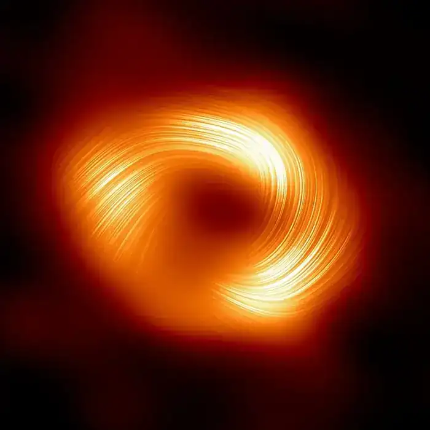
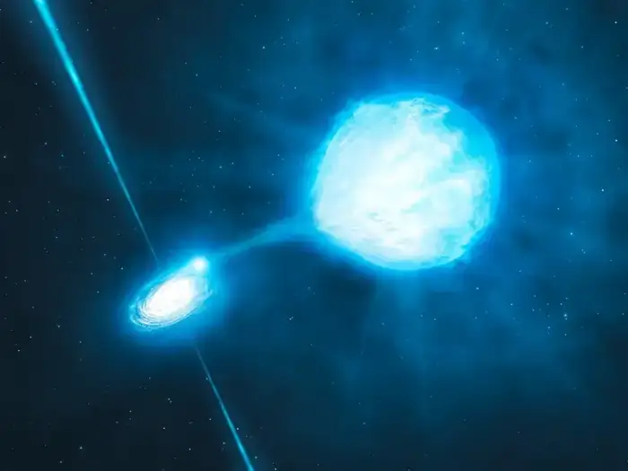
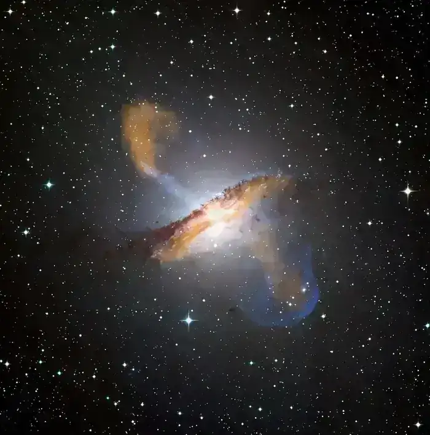

The paradox
In 1974–76 Stephen Hawking showed that black holes radiate thermally, and that the radiation depends only on mass, charge and spin. When the hole evaporates completely, what is left is thermal radiation — which carries no information about the object that formed it.
Maps, diagrams and images






Quantum mechanics requires that information about a system's initial state is preserved under unitary evolution. General relativity, in this calculation, destroys it. One of the two must give.
The progress
The dominant line of work since the 1990s is holographic: the information is encoded on the horizon, and the evaporation is unitary if you compute it carefully. The 2019–2020 'island' calculations, using the replica trick from quantum information theory, recovered the expected Page curve — the entropy of radiation rises then falls, as unitarity requires — in several simplified models.
That is genuine progress and it is not a resolution. The models are toy models, the assumptions are strong, and no observation can distinguish the options.
Documented: Hawking radiation, its thermality, and the resulting paradox.
Progress: holographic and island calculations reproduce the Page curve in simplified settings.
Not resolved: a full quantum theory of gravity, and therefore the question in the real world.
The firewall argument: a 2012 result showing that unitarity plus the equivalence principle plus no drama at the horizon cannot all hold.
The honest position: the most productive unsolved problem in theoretical physics, with no experimental test in sight.
Why it is in the archive
Because it is the archive's example of a debate where everyone agrees on the facts and disagrees about what they mean — and where the disagreement is a sign of health, not of confusion.
Open resources on this topic
- BookResolving the black-hole information paradox by treating time on an equal footing with space — H. Nikolic · 2009 (Internet Archive, free to read)
- BookDecoherence, Re-coherence, and the Black Hole Information Paradox — ['J. R. Anglin', 'R. Laflamme', 'W. H. Zurek', 'J. P. Paz'] · 1994 (Internet Archive, free to read)
- BookThe black hole information paradox and macroscopic superpositions — Stephen D. H. Hsu · 2010 (Internet Archive, free to read)
- PapersOpen-access articles: DOAJ · PubMed Central · Internet Archive Scholar
- BooksPublic-domain and borrowable copies: Open Library · Project Gutenberg · Google Books
Cite this page
Momin, S. (2026). The Black Hole Information Paradox. The Larger World Archive. https://drsamonline.github.io/LARGE_GLOBE/black-hole-information.htmlMomin, Sohil. “The Black Hole Information Paradox.” The Larger World Archive, 2026, https://drsamonline.github.io/LARGE_GLOBE/black-hole-information.html.Momin, Sohil. “The Black Hole Information Paradox.” The Larger World Archive, 2026. https://drsamonline.github.io/LARGE_GLOBE/black-hole-information.html.@misc{the2026black,
author = {Momin, Sohil},
title = {The Black Hole Information Paradox},
year = {2026},
howpublished = {The Larger World Archive},
url = {https://drsamonline.github.io/LARGE_GLOBE/black-hole-information.html},
note = {Last reviewed 20 November 2026}
}Last reviewed 20 November 2026 · Corrections policy · this page is not peer reviewed
Sources for this page
- Wikipedia, “Black hole information paradox” — the problem and the proposed resolutionsen.wikipedia.org
- Wikipedia, “Hawking radiation” — the result that creates iten.wikipedia.org
- Wikipedia, “Holographic principle” — the framework most progress usesen.wikipedia.org
- Wikipedia, “Firewall (physics)” — the 2012 result that sharpened iten.wikipedia.org